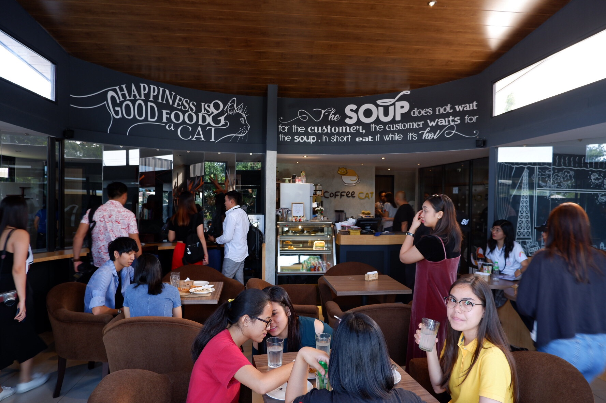
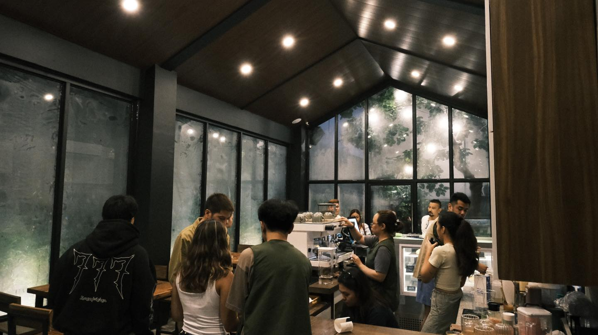
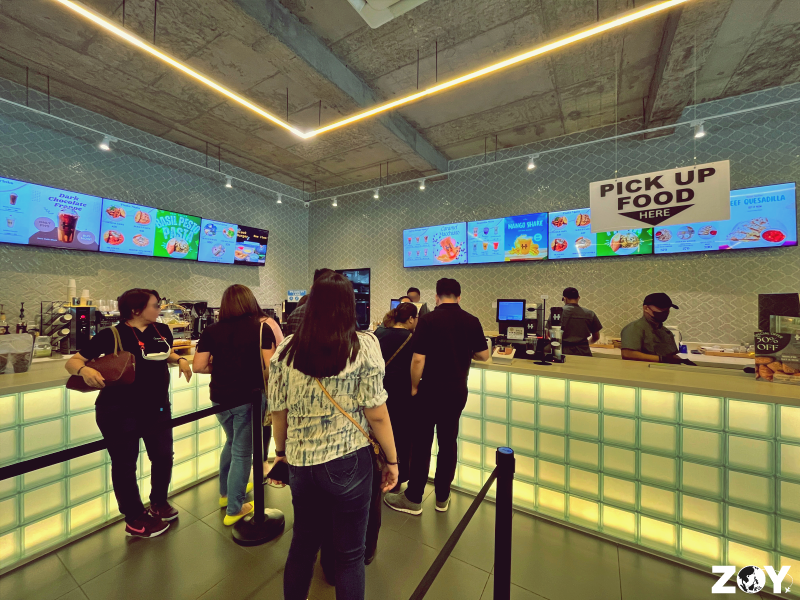
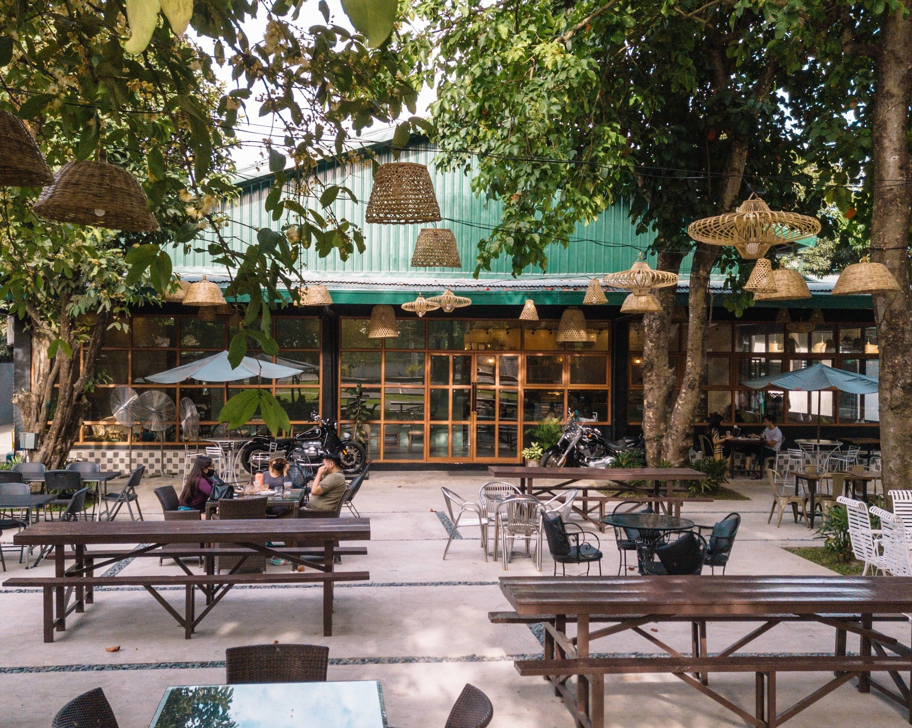
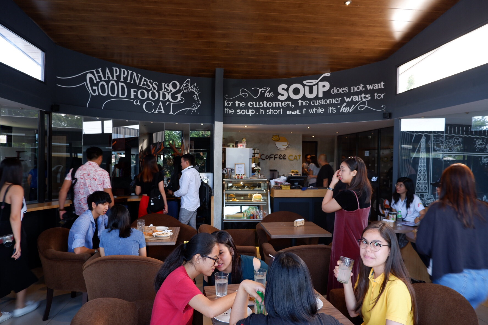
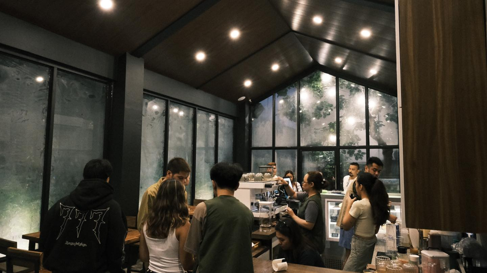
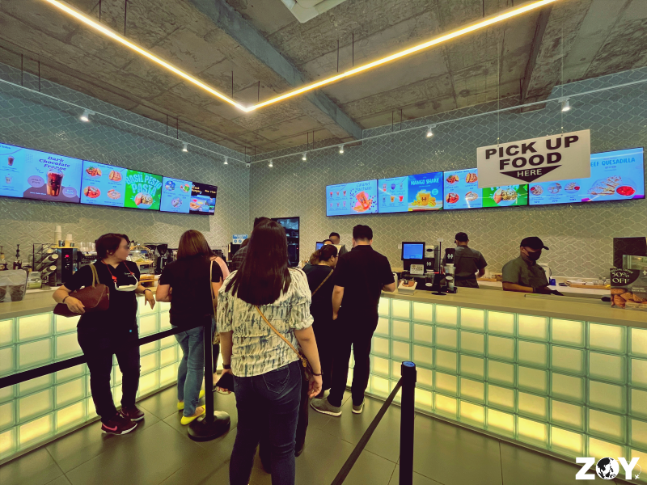
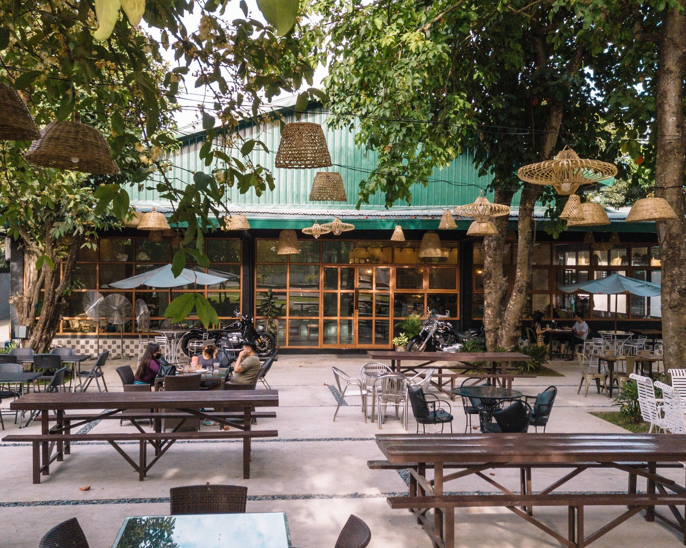

Our Story
Welcome to Luid, Kape! Our journey began with a simple passion for coffee and a desire to connect people with the vibrant coffee culture in Pampanga. We believe that coffee is more than just a drink; it’s an experience that brings people together. Our mission is to uncover and showcase the unique, independent cafés that make our community special.
Through this platform, we aim to support small businesses by sharing their stories and offerings, encouraging locals and visitors alike to explore new favorites. We are dedicated to enhancing the coffee culture by providing a space where coffee enthusiasts can discover hidden gems that match their taste, lifestyle, and needs.
About Us
Luid, Kape is your go-to resource for discovering local coffee shops that offer exceptional brews and unique atmospheres. Whether you're a remote worker seeking a cozy spot, a casual coffee drinker, or a tourist looking to explore local flavors, our website is designed for you.
We connect coffee lovers with the best local cafés, fostering a community that appreciates authentic, community-driven coffee experiences. Join us in supporting local businesses and uncovering the best coffee shops in every neighborhood. Together, let’s celebrate the love for coffee and the stories that each café has to tell.